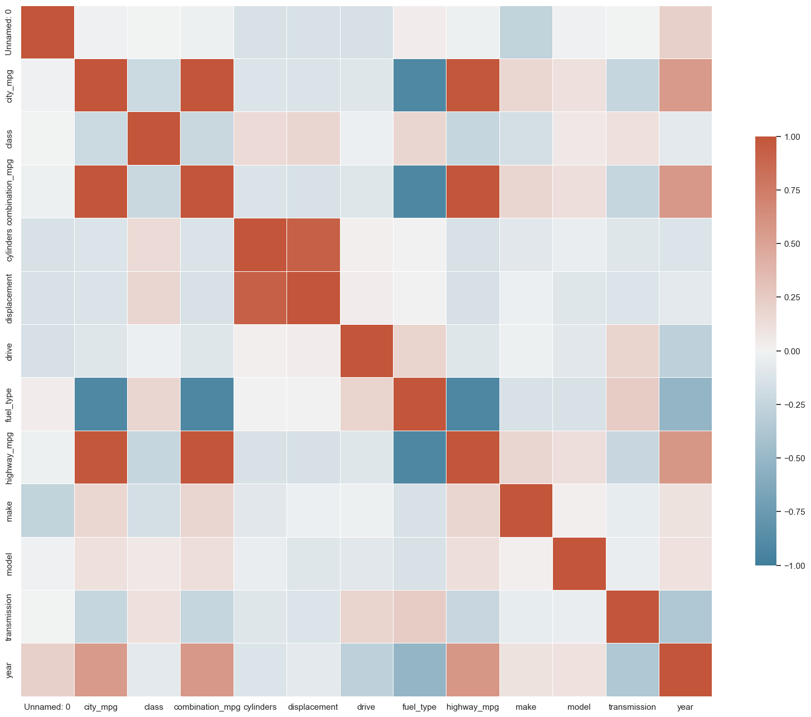
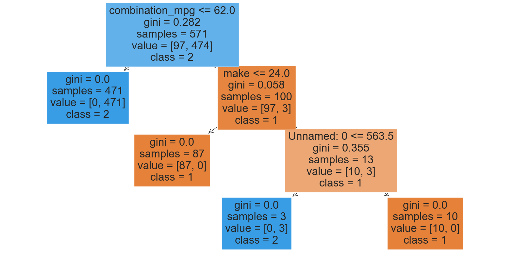
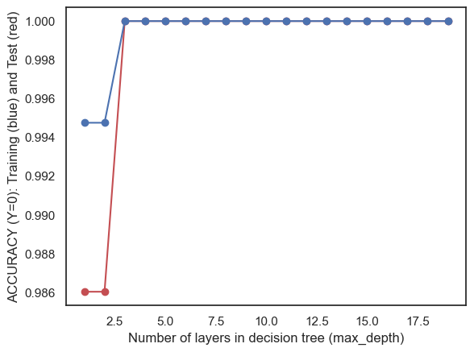
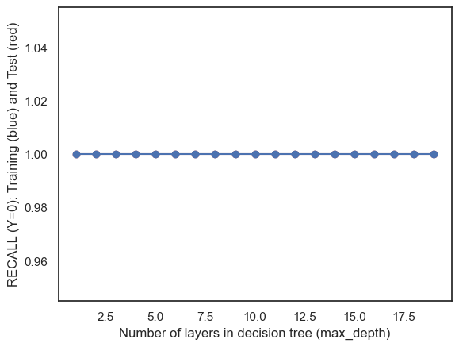
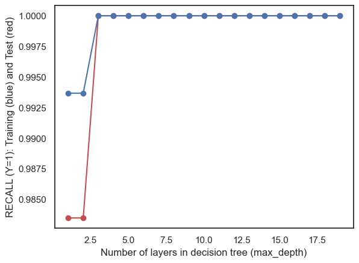
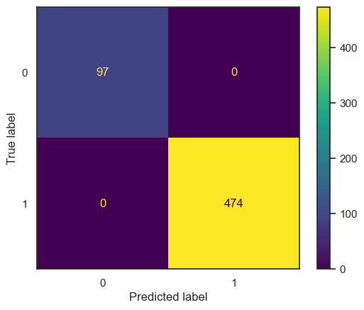
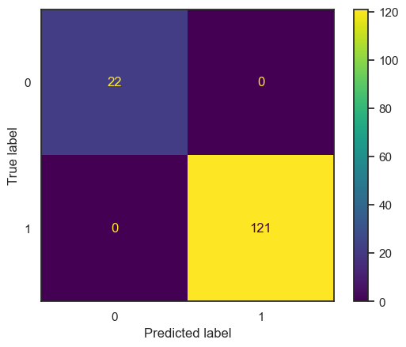
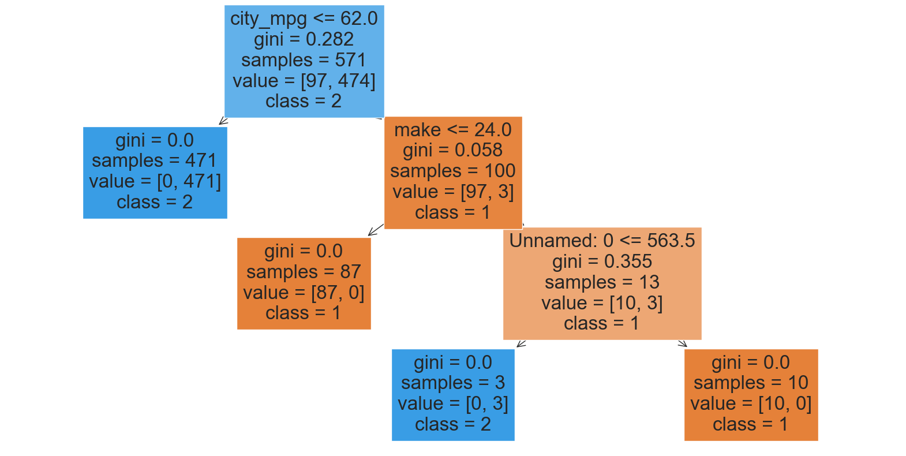

import pandas as pd
import seaborn as sns
import matplotlib.pyplot as plt
from sklearn import tree
from IPython.display import Image
import numpy as np
from sklearn.metrics import accuracy_score
from sklearn.metrics import precision_score
from sklearn.metrics import recall_scoredf=pd.read_csv('cardf_cleaned.csv')
print(df.shape)
df.head()(719, 13)| Unnamed: 0 | city_mpg | class | combination_mpg | cylinders | displacement | drive | fuel_type | highway_mpg | make | model | transmission | year | |
|---|---|---|---|---|---|---|---|---|---|---|---|---|---|
| 0 | 0 | 18 | 2 | 21 | 4.0 | 2.2 | 2 | 2 | 26 | 24 | 33 | 0 | 1993 |
| 1 | 1 | 19 | 2 | 22 | 4.0 | 2.2 | 2 | 2 | 27 | 24 | 33 | 1 | 1993 |
| 2 | 2 | 16 | 2 | 19 | 6.0 | 3.0 | 2 | 2 | 22 | 24 | 33 | 0 | 1993 |
| 3 | 3 | 16 | 2 | 18 | 6.0 | 3.0 | 2 | 2 | 22 | 24 | 33 | 1 | 1993 |
| 4 | 4 | 18 | 4 | 21 | 4.0 | 2.2 | 2 | 2 | 26 | 24 | 33 | 0 | 1993 |
# Dropping rows from the DataFrame where 'fuel_type' is 'Diesel'
df = df[df['fuel_type'] != 0]
# Display the resulting DataFrame
df| Unnamed: 0 | city_mpg | class | combination_mpg | cylinders | displacement | drive | fuel_type | highway_mpg | make | model | transmission | year | |
|---|---|---|---|---|---|---|---|---|---|---|---|---|---|
| 0 | 0 | 18 | 2 | 21 | 4.000000 | 2.200000 | 2 | 2 | 26 | 24 | 33 | 0 | 1993 |
| 1 | 1 | 19 | 2 | 22 | 4.000000 | 2.200000 | 2 | 2 | 27 | 24 | 33 | 1 | 1993 |
| 2 | 2 | 16 | 2 | 19 | 6.000000 | 3.000000 | 2 | 2 | 22 | 24 | 33 | 0 | 1993 |
| 3 | 3 | 16 | 2 | 18 | 6.000000 | 3.000000 | 2 | 2 | 22 | 24 | 33 | 1 | 1993 |
| 4 | 4 | 18 | 4 | 21 | 4.000000 | 2.200000 | 2 | 2 | 26 | 24 | 33 | 0 | 1993 |
| ... | ... | ... | ... | ... | ... | ... | ... | ... | ... | ... | ... | ... | ... |
| 714 | 714 | 80 | 8 | 76 | 5.154622 | 2.760336 | 0 | 1 | 72 | 9 | 60 | 0 | 2021 |
| 715 | 715 | 89 | 8 | 85 | 5.154622 | 2.760336 | 0 | 1 | 82 | 9 | 60 | 0 | 2023 |
| 716 | 716 | 79 | 8 | 76 | 5.154622 | 2.760336 | 0 | 1 | 72 | 9 | 60 | 0 | 2023 |
| 717 | 717 | 74 | 12 | 70 | 5.154622 | 2.760336 | 0 | 1 | 66 | 20 | 102 | 0 | 2022 |
| 718 | 718 | 73 | 13 | 69 | 5.154622 | 2.760336 | 0 | 1 | 65 | 20 | 101 | 0 | 2022 |
714 rows × 13 columns
# LOOK AT FIRST ROW
print(df.iloc[0])Unnamed: 0 0.0
city_mpg 18.0
class 2.0
combination_mpg 21.0
cylinders 4.0
displacement 2.2
drive 2.0
fuel_type 2.0
highway_mpg 26.0
make 24.0
model 33.0
transmission 0.0
year 1993.0
Name: 0, dtype: float64# INSERT CODE TO PRINT ITS SHAPE AND COLUMN NAMES
print(df.shape)
df.columns(714, 13)Index(['Unnamed: 0', 'city_mpg', 'class', 'combination_mpg', 'cylinders',
'displacement', 'drive', 'fuel_type', 'highway_mpg', 'make', 'model',
'transmission', 'year'],
dtype='object')#INSERT CODE TO PRINT THE FOLLOWING DATA-FRAME WHICH SUMMARIZES EACH COLUMN
summary = df.describe().T
summary['dtypes'] = df.dtypes
summary = summary[['dtypes', 'min', 'mean', 'max']]
print(summary) dtypes min mean max
Unnamed: 0 int64 0.0 358.282913 718.0
city_mpg int64 9.0 34.099440 150.0
class int64 0.0 7.614846 15.0
combination_mpg int64 11.0 35.127451 136.0
cylinders float64 3.0 5.159906 10.0
displacement float64 1.4 2.765100 6.2
drive int64 0.0 1.813725 3.0
fuel_type int64 1.0 1.833333 2.0
highway_mpg int64 12.0 37.345938 123.0
make int64 0.0 13.113445 26.0
model int64 0.0 74.015406 150.0
transmission int64 0.0 0.218487 1.0
year int64 1984.0 2006.728291 2023.0# Count the number of samples for each target value
# resource: https://pandas.pydata.org/docs/reference/api/pandas.Series.value_counts.html
target_counts = df['fuel_type'].value_counts(normalize=True) # normalize=True to get the proportions
# Print the results
for target, count in target_counts.items():
print(f"Number of points with target={target}: {count * len(df)} {count}")Number of points with target=2: 595.0 0.8333333333333334
Number of points with target=1: 119.0 0.16666666666666666# RUN THE FOLLOWING CODE TO SHOW THE HEAT-MAP FOR THE CORRELATION MATRIX
corr = df.corr(); #print(corr) #COMPUTE CORRELATION OF FEATER MATRIX
print(corr.shape)
sns.set_theme(style="white")
f, ax = plt.subplots(figsize=(20, 20)) # Set up the matplotlib figure
cmap = sns.diverging_palette(230, 20, as_cmap=True) # Generate a custom diverging colormap
# Draw the heatmap with the mask and correct aspect ratio
sns.heatmap(corr, cmap=cmap, vmin=-1, vmax=1, center=0,
square=True, linewidths=.5, cbar_kws={"shrink": .5})
plt.show();(13, 13)
# INSERT CODE TO MAKE DATA-FRAMES (or numpy arrays) (X,Y) WHERE Y="target" COLUMN and X="everything else"
# Resource used: https://medium.com/codex/how-to-set-x-and-y-in-pandas-3f38584e9bed
X = df.drop('fuel_type', axis=1) # X includes everything except the target column
y = df['fuel_type'] # Y is just the target columnfrom collections import Counter
import numpy as np
import random
from sklearn.metrics import accuracy_score, precision_recall_fscore_support
def generate_label_data(class_labels, weights, N=10000):
# Generate random labels based on the given class weights
y = random.choices(class_labels, weights=weights, k=N)
print("-----GENERATING DATA-----")
print("unique entries:", Counter(y).keys())
print("count of labels:", Counter(y).values())
print("probability of labels:", np.array(list(Counter(y).values())) / N)
return y
def random_classifier(y_data, class_labels, weights):
# Generate random predictions based on the distribution of class labels
ypred = random.choices(class_labels, weights=weights, k=len(y_data))
print("-----RANDOM CLASSIFIER-----")
print("count of prediction:", Counter(ypred).values())
print("probability of prediction:", np.array(list(Counter(ypred).values())) / len(y_data))
print("accuracy", accuracy_score(y_data, ypred))
precision, recall, fscore, _ = precision_recall_fscore_support(y_data, ypred, average=None, labels=class_labels)
print("precision, recall, fscore:", list(zip(precision, recall, fscore)))# INSERT CODE TO PARTITION THE DATASET INTO TRAINING AND TEST SETS
from sklearn.model_selection import train_test_split
x_train, x_test, y_train, y_test = train_test_split(X, y, test_size=0.2, random_state=0)# INSERT CODE, AS A CONSISTENCY CHECK, TO PRINT THE TYPE AND SHAPE OF x_train, x_test, y_train, y_test
# Changed the output structure for better understanding
print("TRAINING SHAPES: \n", f"x_train:\n shape: {x_train.shape}\n type: {type(x_train)}\n", f"y_train:\n shape: {y_train.shape}\n type: {type(y_train)}\n")
print("TEST SHAPES: \n", f"x_test:\n shape: {x_test.shape}\n type: {type(x_test)}\n", f"y_test:\n shape: {y_test.shape}\n type: {type(y_test)}\n")TRAINING SHAPES:
x_train:
shape: (571, 12)
type: <class 'pandas.core.frame.DataFrame'>
y_train:
shape: (571,)
type: <class 'pandas.core.series.Series'>
TEST SHAPES:
x_test:
shape: (143, 12)
type: <class 'pandas.core.frame.DataFrame'>
y_test:
shape: (143,)
type: <class 'pandas.core.series.Series'>
# # INSERT CODE TO USE THE MODEL TO MAKE PREDICTIONS FOR THE TRAINING AND TEST SET
# yp_train = model.predict(x_train)
# yp_test = model.predict(x_test)#INSERT CODE TO WRITE A FUNCTION def confusion_plot(y_data,y_pred) WHICH GENERATES A CONFUSION MATRIX PLOT AND PRINTS THE INFORMATION ABOVE (see link above for example)
import matplotlib.pyplot as plt
from sklearn.datasets import make_classification
from sklearn.metrics import confusion_matrix, ConfusionMatrixDisplay
from sklearn.model_selection import train_test_split
from sklearn.svm import SVC
def confusion_plot(y_data, y_pred):
cm = confusion_matrix(y_data, y_pred)
# Calculate metrics
accuracy = accuracy_score(y_data, y_pred)
negative_recall = recall_score(y_data, y_pred)
negative_precision = precision_score(y_data, y_pred)
positive_recall = recall_score(y_data, y_pred)
positive_precision = precision_score(y_data, y_pred)
# Print metrics
print(f"ACCURACY: {accuracy}")
print(f"NEGATIVE RECALL (Y=0): {negative_recall}")
print(f"NEGATIVE PRECISION (Y=0): {negative_precision}")
print(f"POSITIVE RECALL (Y=1): {positive_recall}")
print(f"POSITIVE PRECISION (Y=1): {positive_precision}")
print(cm)
disp = ConfusionMatrixDisplay(confusion_matrix=cm)
disp.plot()
plt.show()# RUN THE FOLLOWING CODE TO TEST YOUR FUNCTION
print("------TRAINING------")
confusion_plot(y_train,yp_train)
print("------TEST------")
confusion_plot(y_test,yp_test)------TRAINING------
ACCURACY: 1.0
NEGATIVE RECALL (Y=0): 1.0
NEGATIVE PRECISION (Y=0): 1.0
POSITIVE RECALL (Y=1): 1.0
POSITIVE PRECISION (Y=1): 1.0
[[ 97 0]
[ 0 474]]
------TEST------
ACCURACY: 1.0
NEGATIVE RECALL (Y=0): 1.0
NEGATIVE PRECISION (Y=0): 1.0
POSITIVE RECALL (Y=1): 1.0
POSITIVE PRECISION (Y=1): 1.0
[[ 22 0]
[ 0 121]]

from sklearn import tree
import matplotlib.pyplot as plt
def plot_tree(model, X, Y):
# Determine class names if Y is categorical and has more than one unique value
class_names = np.unique(Y).astype(str).tolist() if len(np.unique(Y)) > 1 else None
plt.figure(figsize=(20, 10))
tree.plot_tree(model,
feature_names=X.columns.tolist(),
class_names=class_names,
filled=True)
plt.show()plot_tree(model,X,y)
# COMPLETE THE FOLLOWING CODE TO LOOP OVER POSSIBLE HYPER-PARAMETERS VALUES
test_results=[]
train_results=[]
for num_layer in range(1,20):
model = tree.DecisionTreeClassifier(max_depth=num_layer)
model = model.fit(x_train, y_train)
yp_train=model.predict(x_train)
yp_test=model.predict(x_test)
# print(y_pred.shape)
test_results.append([num_layer,accuracy_score(y_test, yp_test),recall_score(y_test, yp_test,pos_label=1),recall_score(y_test, yp_test,pos_label=2)])
train_results.append([num_layer,accuracy_score(y_train, yp_train),recall_score(y_train, yp_train,pos_label=1),recall_score(y_train, yp_train,pos_label=2)])
test_results=np.array(test_results)
train_results=np.array(train_results)
col=1
plt.plot (test_results[:,0],test_results[:,col],'-or')
plt.plot(train_results[:,0],train_results[: ,col],'-ob')
plt.xlabel('Number of layers in decision tree (max_depth)')
plt.ylabel ('ACCURACY (Y=0): Training (blue) and Test (red)')
plt. show()
col=2
plt.plot (test_results[:,0],test_results[:,col],'-or')
plt.plot(train_results[:,0],train_results[: ,col],'-ob')
plt.xlabel('Number of layers in decision tree (max_depth)')
plt.ylabel ('RECALL (Y=0): Training (blue) and Test (red)')
plt. show()
col=3
plt.plot (test_results[:,0],test_results[:,col],'-or')
plt.plot(train_results[:,0],train_results[: ,col],'-ob')
plt.xlabel('Number of layers in decision tree (max_depth)')
plt.ylabel ('RECALL (Y=1): Training (blue) and Test (red)')
plt. show()


#### COMPLETE THE CODE BELOW TO TRAIN A SKLEARN DECISION TREE MODEL ON x_train,y_train
from sklearn import tree
model = tree.DecisionTreeClassifier(max_depth=3)
model = model.fit(x_train, y_train)
yp_train=model.predict(x_train)
yp_test=model.predict(x_test)# RUN THE FOLLOWING CODE TO EVALUATE YOUR MODEL
print("------TRAINING------")
confusion_plot(y_train,yp_train)
print("------TEST------")
confusion_plot(y_test,yp_test)
plot_tree(model,X,y)------TRAINING------
ACCURACY: 1.0
NEGATIVE RECALL (Y=0): 1.0
NEGATIVE PRECISION (Y=0): 1.0
POSITIVE RECALL (Y=1): 1.0
POSITIVE PRECISION (Y=1): 1.0
[[ 97 0]
[ 0 474]]
------TEST------
ACCURACY: 1.0
NEGATIVE RECALL (Y=0): 1.0
NEGATIVE PRECISION (Y=0): 1.0
POSITIVE RECALL (Y=1): 1.0
POSITIVE PRECISION (Y=1): 1.0
[[ 22 0]
[ 0 121]]

